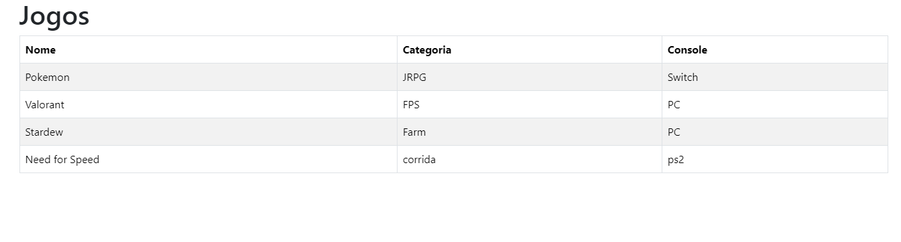

JogoTeca
Jogoteca permite que os usuários façam login para acessar um sistema de cadastro de jogos. Após o login, os usuários podem adicionar novos jogos à lista, informando o nome, a categoria e o console de cada jogo. A aplicação organiza e exibe esses jogos de forma simples e eficiente, facilitando o gerenciamento da coleção pessoal. (Para tester use usuário: teste e senha:1 234)
 Rep.
Rep.
CodeConnect
CodeConnect é uma página web que simula o envio de formulários para a plataforma homônima, utilizando HTML, CSS e JavaScript. Através dela, o usuário pode enviar uma imagem, nome, descrição e tags personalizadas de um projeto.
Lista de Compras
Lista de Compras é uma pagina web que utiliza JavaScript para permitir aos usuários gerenciar uma lista de compras.
Alura+
Alura+ é uma pagina feita para simular uma propaganda de assinatura da plataforma Alura
AluraBooks

AluraBooks é uma pagina feita para venda de livros, sendo totalmente responsiva para celular, tablet e desktop.
Groceries
Groceries é um aplicativo web que utiliza Python e SQL para permitir aos usuários gerenciar uma lista de compras. Ele foi feito como atividade para o meu certificado de CS50: Introduction to Computer Science